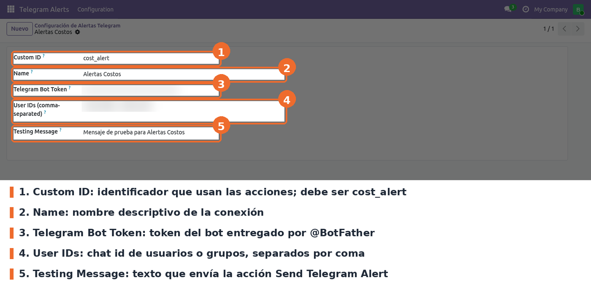
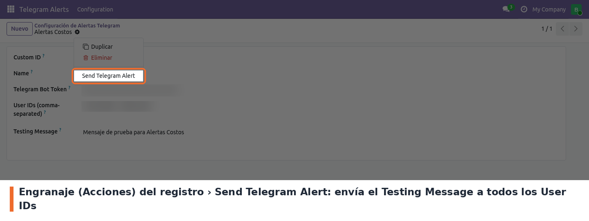
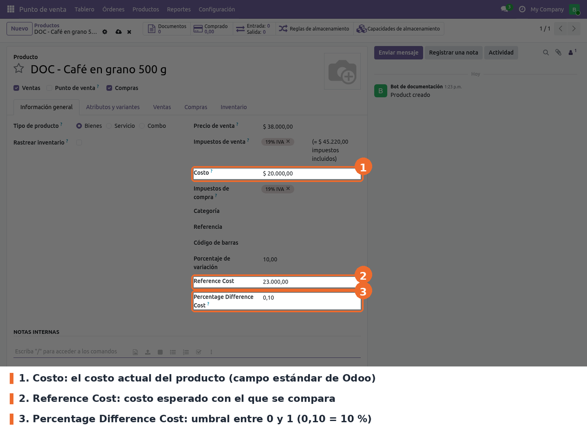
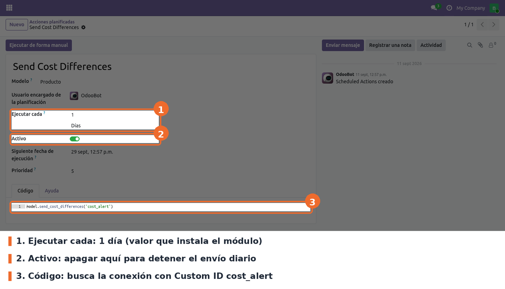
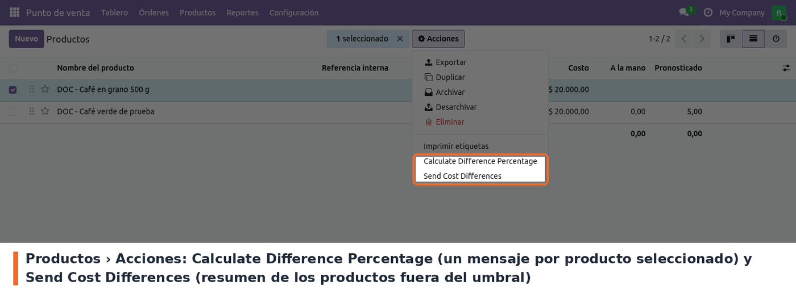

Envía alertas de costos de productos a Telegram. Cada producto puede tener un costo de referencia y un porcentaje de diferencia permitido; una acción planificada diaria revisa todos los productos y manda a uno o varios chats de Telegram la lista de los que tienen el costo por fuera de ese umbral.
Sirve para detectar a tiempo un costo mal cargado o un cambio de precio de compra que no se esperaba, sin tener que revisar los productos uno por uno.
Las alertas salen por un bot de Telegram propio del negocio. El módulo guarda la conexión (token del bot y chats destino) y ofrece además una acción para enviar un mensaje de prueba y otra para calcular la diferencia de productos puntuales.
base y product. No depende de otros módulos de este repositorio.requests, que ya viene con Odoo (en la imagen odoo:19.0 está la versión
2.31.0). No hay que instalar nada adicional.https://api.telegram.org. Hace falta un bot creado con @BotFather (que entrega el token) y
que ese bot pueda escribir en cada chat destino: el usuario tiene que haberle iniciado una
conversación, o el bot tiene que estar agregado al grupo.Instalar Telegram Alerts desde Aplicaciones. La instalación crea:
cost_alert;Después de instalar, revisar la conexión Alertas Costos (ver Configuración) antes de que corra la acción planificada.
El nombre técnico del módulo, del modelo telegram.alerts.config y de los campos de producto
(reference_cost, percentage_difference_cost) no cambian respecto de 17, así que los datos se
conservan sin script. Cambios de la migración: la vista de lista usa <list> en lugar de
<tree>, la acción planificada ya no lleva numbercall (en 19 se repite hasta que se desactiva)
y se quitaron los archivos de ejemplo del andamiaje de Odoo (models/models.py, controlador,
views/views.xml, views/templates.xml y demo/demo.xml), que en 17 estaban completamente
comentados. La etiqueta del campo Percentage Difference Cost corrigió su ortografía.
Ir a Telegram Alerts › Configuration y abrir la conexión Alertas Costos (o crear una con Nuevo). Todos los campos son obligatorios y ninguno tiene valor por defecto en el formulario.

Telegram Alerts › Configuration: campos de la conexión (token y chats difuminados)
identifier). Obligatorio. Es la clave con la que las acciones encuentran la
conexión. La acción planificada y la acción Send Cost Differences buscan exactamente
cost_alert: si se cambia, dejan de enviar y fallan con Telegram configuration not found.name). Obligatorio. Nombre descriptivo; no interviene en el envío.token). Obligatorio. El token que entrega @BotFather. Se muestra
enmascarado en pantalla.user_ids). Obligatorio. Identificadores de chat de Telegram,
separados por coma. Pueden ser usuarios (número positivo) o grupos (número negativo). Los
espacios alrededor de cada coma se ignoran. Cada alerta se envía a todos.msg_test). Obligatorio. Texto que envía la acción de prueba.Para probar la conexión, abrir el registro y, en el engranaje junto al nombre, elegir Send Telegram Alert. Envía el Testing Message a cada chat de User IDs. Si no hay error, la conexión funciona.

Acción Send Telegram Alert en el engranaje del registro de conexión
En el formulario del producto (por ejemplo desde Punto de venta › Productos › Productos), pestaña Información general, debajo de Costo, aparecen dos campos nuevos. Un producto solo entra en la revisión diaria si tiene los dos con valor distinto de cero.

Formulario de producto: Costo, Reference Cost y Percentage Difference Cost
reference_cost). Opcional; 0 por defecto. El costo esperado del producto.percentage_difference_cost). Opcional; 0 por defecto. Umbral
expresado como fracción entre 0 y 1: 0,10 significa 10 %. Un valor fuera de ese rango no se
puede guardar (The Percentage Difference Cost must be between 0 and 1). Con la interfaz en
español el separador decimal es la coma: escribir 0,10, no 0.10.El campo Porcentaje de variación que se ve en la misma pantalla no es de este módulo (lo agrega
purchase_price_validation) y usa otra escala.
Ajustes › Técnico › Automatización › Acciones planificadas (requiere el modo desarrollador), registro Send Cost Differences.

Acción planificada Send Cost Differences: intervalo, activo y código
model.send_cost_differences('cost_alert'), es decir, usa la conexión con Custom ID
cost_alert.Atención: la conexión de ejemplo y la acción planificada se cargan sin noupdate. Cada vez
que se actualiza el módulo, Odoo vuelve a escribir los valores del archivo de datos: el token, los
chats y el mensaje de Alertas Costos, y el intervalo y el estado Activo de la acción
planificada. Hay que revisarlos después de cada actualización (ver Limitaciones conocidas).
cost_alert, con el encabezado Productos con costo por fuera del umbral y una línea por
producto: nombre, costo actual y diferencia en porcentaje.La diferencia es el valor absoluto de (referencia − costo) / costo × 100, y se compara con el umbral × 100. Un producto con diferencia exactamente igual al umbral no se informa.
En la lista de productos, al seleccionar uno o más, el menú Acciones muestra dos opciones del módulo. Las dos envían a Telegram en cuanto se eligen, sin pedir confirmación.

Productos › Acciones: Calculate Difference Percentage y Send Cost Differences
cost_alert. Send Telegram
Alert prueba la conexión abierta (o las seleccionadas en la lista).cost_alert
(o ninguna conexión, en el caso de Calculate Difference Percentage). Crearla o corregir el
Custom ID.data/telegram_config.xml y la acción
planificada de data/server_actions.xml no están en noupdate. Al actualizar el módulo se
restauran el token, los chats y el mensaje de Alertas Costos, y la acción planificada vuelve a
quedar activa cada 1 día aunque se hubiera apagado o cambiado.data/telegram_config.xml trae un token de bot y dos chat id
reales, que se cargan en cualquier base donde se instale el módulo. Mientras eso siga así, una
base de pruebas con la acción planificada activa puede enviar mensajes a los chats reales.security/ir.model.access.csv da lectura, escritura, creación y borrado
del modelo telegram.alerts.config sin grupo, es decir, a todos los usuarios; el menú tampoco
tiene grupo. El token se enmascara en pantalla (password="true"), pero cualquier usuario puede
leerlo por la API.send_message llama a Telegram con requests.get sin
timeout. Si Telegram no responde, el proceso queda esperando. No hay reintentos: un fallo se
informa como error y el siguiente intento es la próxima ejecución diaria.raise_for_status() arma el mensaje de error con esa URL, así que queda visible en el diálogo de
error y en el log del servidor.resp.raise_for_status() lanza una excepción en el primer chat que
falla y los chats siguientes no reciben el mensaje.ValueError, no UserError, así
que el usuario ve un error del servidor en lugar de un aviso.i18n; el encabezado del
resumen diario está en español dentro del código.cost_alert.static/description/icon.png mide 1024x1024 px; la convención del proyecto es
100x100 px.models/telegram_alerts.py: modelo telegram.alerts.config (la conexión) y el envío
(send_message, send_alert, send_alert_test) a https://api.telegram.org/bot<token>/sendMessage,
en texto plano.models/product_template.py: campos reference_cost y percentage_difference_cost en
product.template, la validación 0–1 y los métodos calculate_difference_percentage y
send_cost_differences(identifier).views/telegram_alerts_views.xml: lista, formulario, acción y menú Telegram Alerts ›
Configuration.views/product_view.xml: los dos campos dentro del grupo group_standard_price del formulario
de producto.data/server_actions.xml: las tres acciones de servidor y la acción planificada diaria.data/telegram_config.xml: la conexión Alertas Costos (cost_alert).cost_alert está escrito en dos lugares de data/server_actions.xml (acción de
servidor y acción planificada). Si se renombra, hay que cambiar los dos.